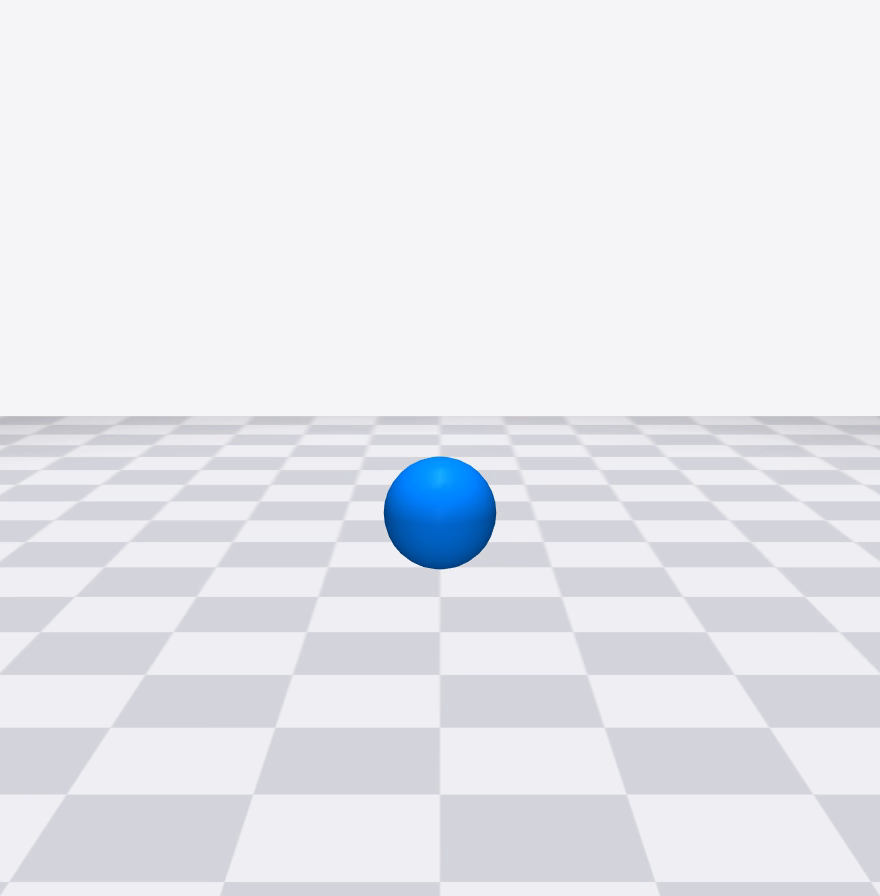
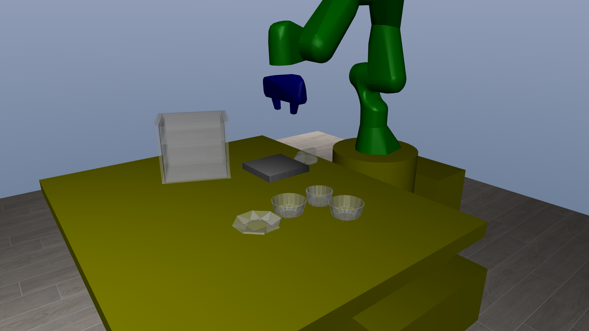
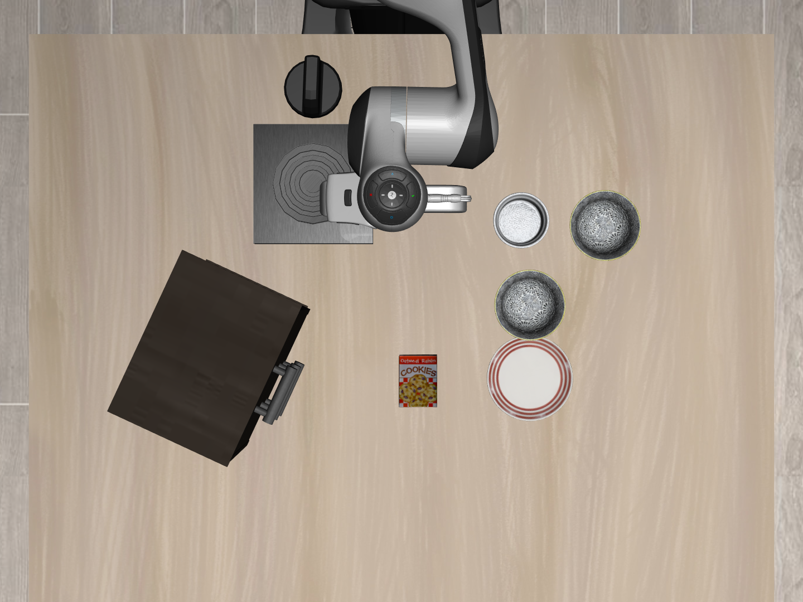
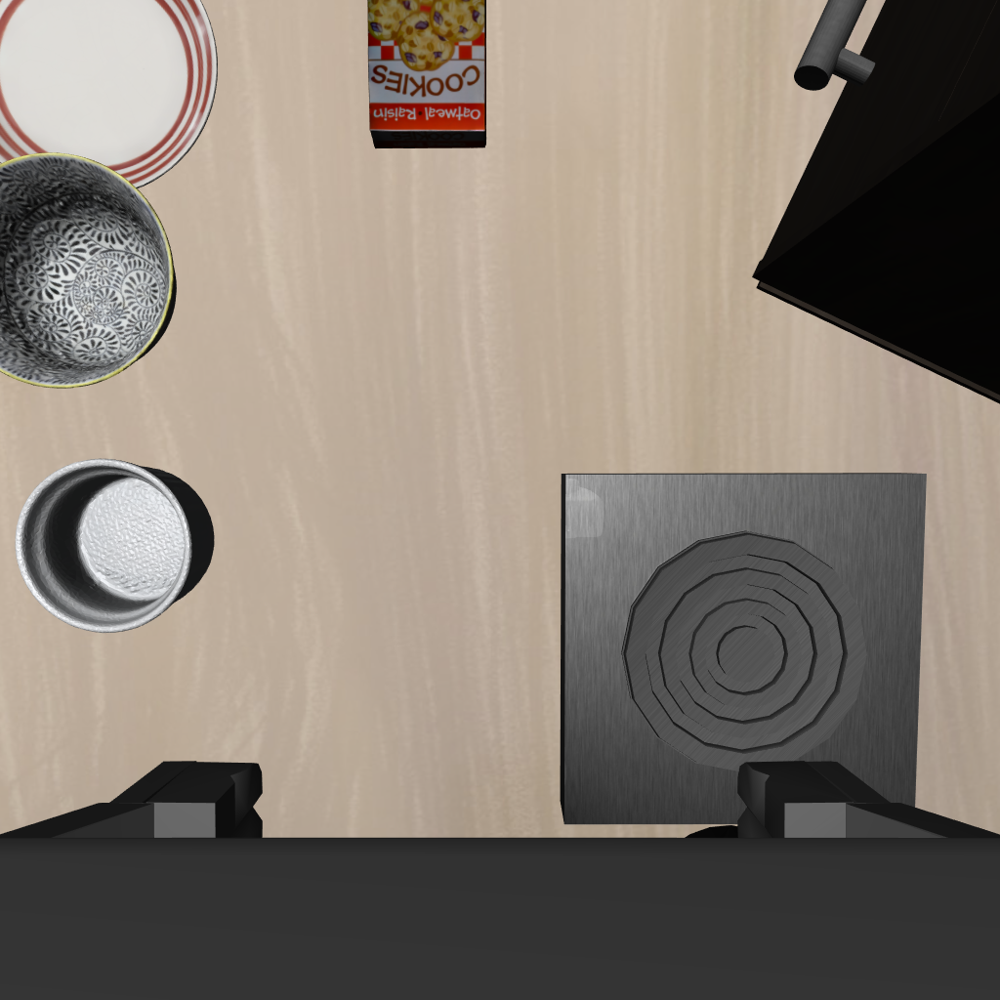
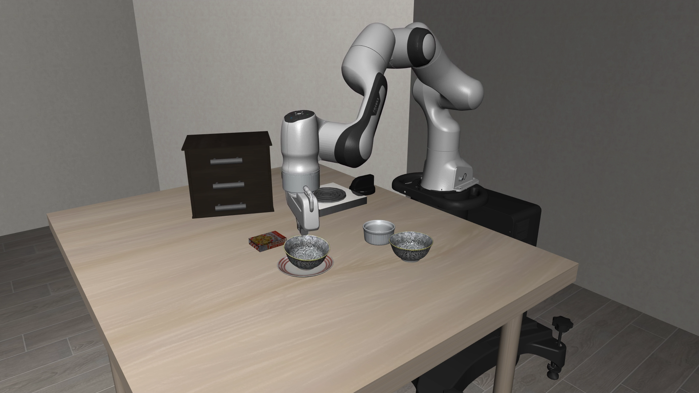

具身智能 · 仿真实验
机器人仿真
从一个小球落地，到 π0.5 在 LIBERO 里抓碗：仿真每一步到底在算什么
可lip





00为什么用仿真 · 仿真一列是 LIBERO 实测
先在仿真里做：快、不怕坏、开局一模一样
| 真机 | 仿真 |
|---|
| 一局多久 | 一两分钟，还要人把东西摆回去 | 一步 21 毫秒，一局约 5 秒（不算模型） |
| 撞坏了 | 要修，可能伤人 | 重开就行 |
| 同时跑几台 | 有几台跑几台 | GPU 仿真能同时开上千个环境 |
| 每局开局 | 很难摆得一模一样 | 每道题 50 个固定开局，各家考同一批 |
| 判成功 | 人看 | 代码判：碗心离盘心 < 3 厘米 |
00路线
这期的四段
01
MuJoCo
场景文件、每一步算什么
配一个小球落地
02
LIBERO
最经典的仿真 benchmark
怎么出题、怎么判
03
π0.5 跑一局
服务端 + 客户端
我们自己跑的结果
00全景 · 以这期跑的 π0.5 + LIBERO 为例
模型出动作，LIBERO 出题判卷，MuJoCo 算物理
01MuJoCo · 基本情况
MuJoCo：带接触的多关节动力学
Multi-Joint dynamics with Contact
名字就是它干的事
2012
Todorov 等 · IROS 论文
为「基于模型的控制」设计的物理引擎
2021 / 2022
DeepMind 收购 / 开源（Apache 2.0）
robosuite → LIBERO、RoboCasa
还有 Meta-World、DeepMind Control Suite
pip install mujoco
官方 Python 包，我们用的 3.2.3
01MuJoCo · 核心定义
MJCF → mjModel + mjData → mj_step
01MuJoCo · config · 我们的小球例子
小球的场景文件：一块地板、一个球、一盏灯
01MuJoCo · 物理引擎的一步
把时间切成 2 毫秒一段，一段一段往前算
01MuJoCo · 小球落地 · 每个数都是仿真里读出来的
开动以后：每 2 毫秒把这四步算一遍
01MuJoCo · LIBERO 场景 · 同一时刻、同一机位 · 左：只画参与碰撞的形状 · 右：只画外观网格
物理算的是简化形状，相机拍的是外观
01MuJoCo · 同一只黑碗 · 左：参与碰撞的形状 · 右：外观网格
物理引擎眼里的碗，是 40 个小方块拼的
01MuJoCo · 核心定义 · LIBERO 场景一共 18 个 joint
能动的东西，都是 body 加一种 joint
01MuJoCo · 核心定义 · 小球开局那一刻
小球的状态：qpos 7 个数，qvel 6 个数
01MuJoCo · 同一套表示放大到机器人场景 · libero_spatial 第 0 题实测
换成 LIBERO 场景：qpos 48 个数，开局存档 92 个数
01MuJoCo · 自己跑的 · 0.25 倍速
0.44 秒碰到地面，和自由落体公式一样
01MuJoCo · 同一段仿真里读出来的
接触是软的：撞地会陷进去一点
0.44 秒
第一次碰到地面
公式 √(2 × 0.95 / 9.81) = 0.440 秒
2.9 厘米
撞地那一下陷进地面的深度
球半径才 5 厘米
2 毫秒
算完这 1 秒（500 步）用的时间
比真实时间快几百倍
1 0 0 0
四元数全程没变：球是竖直掉下来的，没转
01MuJoCo · 同一个场景只改 timestep · 地面画成半透明 · 0.25 倍速
步长改成 0.05 秒，球整个钻进地面
01MuJoCo · 小结
仿真是近似
接触是软的：撞地陷 2.9 厘米，停下还陷 0.37 毫米
步长要小：0.05 秒一步，球钻进地面 10 厘米
参数是人填的：质量、摩擦、接触软硬
画面是算出来的：光照、材质都简化过
仿真和真实世界之间的这些差距，统称 sim-to-real gap
02LIBERO · UT Austin 等 · NeurIPS 2023 数据集与 benchmark 赛道
LIBERO：VLA 论文最常用的仿真考试
130 道题
一句指令 + 一个场景 + 一个成功条件
4 × 10
VLA 论文用的四组：
Spatial / Object / Goal / Long
Franka Panda 单臂
每秒 20 步，每步 7 个数
02LIBERO · 读代码 · 行数是我们拉下来的这两份代码
LIBERO 不算物理：真正算物理的只有最底下一层
02LIBERO · libero_spatial 第 0 题 · 俯视渲染 + BDDL 原文的区域坐标
一道题 = 一份 BDDL：摆什么、摆哪、怎样算对
02LIBERO · 两台相机 · 相机真实视角 · 观测一共 32 项
每一步交回来：两张图、机器人读数、物体坐标
02LIBERO · robosuite 里一次 env.step
动作走 1 步，物理算 25 步
02LIBERO · π0.5 那一局第 23–29 步，x 方向实测 · 控制器 OSC
目标放在前面 4.7 厘米，手每步只走 1.2 厘米
02LIBERO · 判定函数 check_ontop · 实测
判成功：碗心离盘心不到 3 厘米，才算放在盘子上
03π0.5 · openpi 官方权重 pi05_libero · 一张 RTX 3090
模型和仿真分成两个进程，用 websocket 连起来
03π0.5 · openpi 源码 · policy.py 里的 infer() 把这 8 步串起来
一次请求：前后处理 7 步，模型本身 116 毫秒
03π0.5 · 第 1 次请求的真实输入 · 已转 180°，和训练时一致
模型真正看到的：两张 224 像素的小图 + 一句指令
03π0.5 · libero_spatial 第 0 题 · 高清回放 · 0.5 倍速
第 47 步抓空，第 79 步重抓，第 109 步成功
03π0.5 · 上排第三人称相机，下排手腕相机
抓空了就张开重来：每 5 步重新看一次画面
03π0.5 · 实测
跑一局的账
2 / 2
同样设置跑两次，都成功
第 109 步 / 第 114 步
9 GB
服务端显存峰值
一张 24 GB 的 3090 够用
96.85%
官方 500 局的平均成功率
我们只跑了 1 局，不能拿来比
04新 benchmark · 和 LIBERO 比，换了哪一层
新 benchmark：换题、换引擎、换渲染
LIBERO-Plus / PRO2025
引擎不变，还是 LIBERO
同一批题换条件：相机、光照、指令、物体位置
RoboTwin 2.0ICML 2026
换引擎：SAPIEN（PhysX）
双臂 50 个任务；干净场景里训练，随机场景里考
RoboCasa365ICLR 2026
引擎不变：robosuite + MuJoCo
2,500 个厨房、365 个任务，300 个是多步组合；带移动底盘
BEHAVIOR Challenge2025 / 2026
换引擎：OmniGibson（基于 Isaac Sim）
全身移动操作的长程家务：50 个任务，今年 100 个
RoboLabRSS 2026
换渲染：Isaac Lab，要 RTX 显卡
不给训练数据，只考用真实数据训出来的模型
世界模型评测2025–2026
没有物理引擎
视频模型读「当前画面 + 动作」，直接生成下一帧；排名和真机接近，成功率偏低
例：Veo 评估器、Ctrl-World
04新 benchmark · 三个引擎对比 · 各家官方文档
引擎换了，原理没换
每一步都是：碰撞检测 → 接触力 → 积分，再渲染。差在下面这几处
| MuJoCo | SAPIEN | Isaac Sim |
|---|
| 谁在用 | LIBERO、RoboCasa365 | RoboTwin 2.0 | BEHAVIOR、RoboLab |
| 物理 | 自己算 | 英伟达 PhysX |
| 接触力 | 软接触：允许陷进去一点，解一个优化问题 | 迭代求解：一轮一轮把穿透推开 |
| 同时跑几个 | CPU 为主，一个核一个环境 | 一张 GPU 同时跑上千个环境 |
| 画面 | OpenGL 光栅化，比较简单 | 光栅化，也能开光追 | RTX 光线追踪，要带光追核心的卡 |
| 场景文件 | MJCF | URDF | USD |
04新 benchmark · π0.5 和各榜第一 · 排行榜 2026-09-28 查 · 协议不同，数字不能横比
π0.5：LIBERO 上 97，新 benchmark 上 12 到 46
05小结
仿真在干嘛
物理：把时间切成 2 毫秒，碰撞 → 受力 → 积分
MuJoCo：MJCF 写场景，mjData 记状态，mj_step 往前推
LIBERO：出题判卷；robosuite 管机器人；MuJoCo 算物理
模型：循环里的一环：看两张图 → 给 10 步 → 走 5 步 → 再看
新 benchmark：换题、换引擎、换渲染
机器人仿真
把时间切小，一步一步算，再让模型坐进这个循环里
MuJoCo · LIBERO · π0.5 · 新 benchmark
可lip